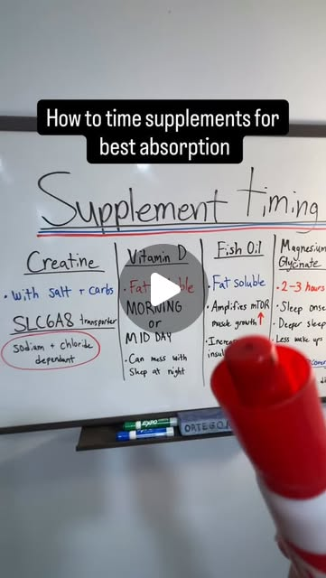

Instagram Reel

There’s a few key things to keep in mind when timing your supplements
video transcript (enriched by ClaudeClaw)
Summary
[CAPTION]
There’s a few key things to keep in mind when timing your supplements
DM me “Inputs” for 1-1 coaching🏆📲
[VIDEO]
This is how to time your supplements correctly. So, first off, we have creatine.
[CAPTION]
There’s a few key things to keep in mind when timing your supplements
DM me “Inputs” for 1-1 coaching🏆📲
[VIDEO]
This is how to time your supplements correctly. So, first off, we have creatine. You always want to take this with salt and some carbs. And the reason for this is that it uses the SLC688 transporter. And this transporter is what allows it to enter muscles in the first place. And it's going to be sodium and chloride dependent. So we get sodium and chloride from the salts. And I'm always using this with carbs to raise insulin as well. So I take this in my post-workout meal. It's a really big game changer when you learn about this. Next up, we have vitamin D. So vitamin D is a fat-soluble vitamin. Always taking this with a fat-containing meal. And I'm taking this in the morning or midday. So it can mess with your sleep at nighttime. If you think about it, vitamin D comes from the sun naturally. It's going to give you energy. So if you're taking this closer to bedtime, it's not going to be good for your sleep. Next up, we have fish oil, again, fat soluble. And the biggest things that you want to learn about this is that it amplifies mTOR, so it's really good for muscle growth and also increases insulin sensitivity. So basically using the food that we have more to muscle growth instead of fat storage. Then lastly, we have magnesium glycinate. This is my go-to form of magnesium. Taking this about two to three hours before I go to sleep. Really good for sleep onset. So falling asleep faster, gonna get deeper sleep from this, and then also less wake ups throughout the night. Also, really good for muscle recovery, really low micronutrient in most diets. So I really recommend supplementing this for the best timing as well.
View original on Instagram Reel →